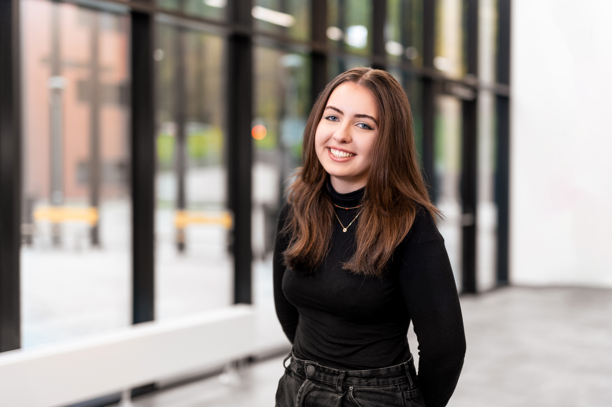

Atlikti darbai
APRAŠYMAS


Aš esu Rusnė Andrulevičiūtė, šiuo metu studijuojų VILNIUS TECH universitete, Informatikos inžinerijos skrityje. Mano studijų kryptis yra dirbtinio intelekto sistemos.
Laisvalaikiui mėgstu fotogrfuoti, filmuoti ir sportuoti. Kūrybiška veikla tai mano būdas atsiriboti ir atsipalaiduoti nuo sunkių darbų. Manau, kad meno supratimas praplėčia mūsų žinias ir padeda spresti sunkias užduotis, į jas pažiūrint kūribingai.
Aš esu asmuo, kuriam būdingas aistringas noras tobulėti ir užsidegimas darbe. Iššūkiai man yra ne kas kita, kaip galimybės augti ir tobulėti, o su nesėkmėmis susiduriu drąsiai, laikydamas jas neįkainojama mokymosi patirtimi, kuri skatina mane žengti pirmyn.
Aprašyt viską trumpai
2019 - 2023
vidurinis išsilavinimas
VILNIAUS GEDIMINO TECHNIKOS UNIVERSITETAS2023 - dabar
2020 - 2023
Socialinių tinklų vadovė2024.06.11 - 2024.08.30
Duomenų administravimo skyriaus praktikantėAPRAŠYMAS
APRAŠYMAS